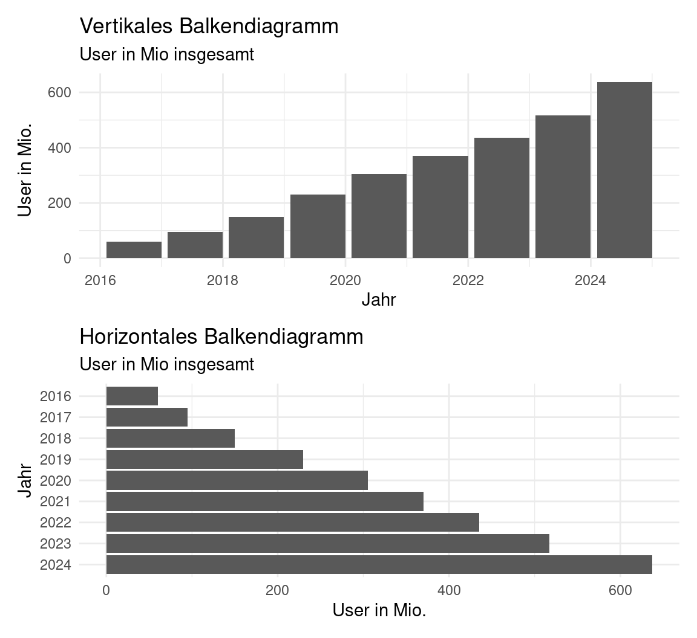
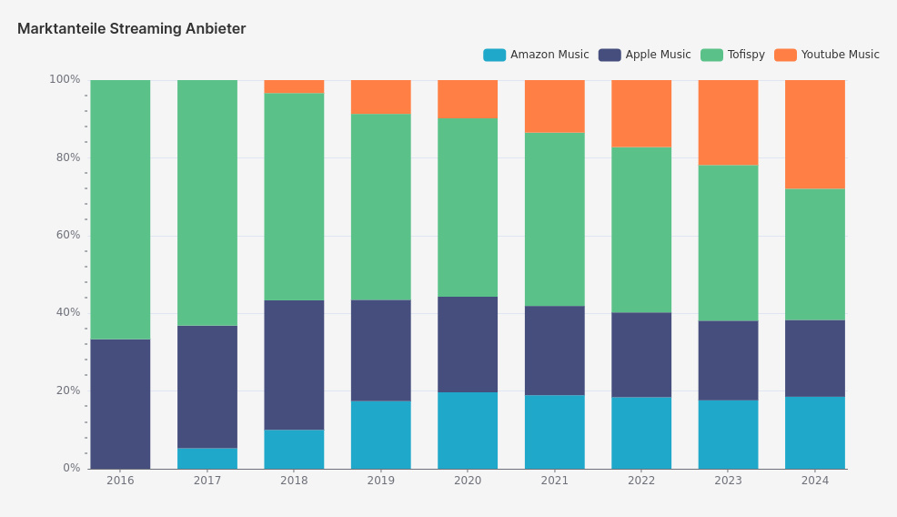
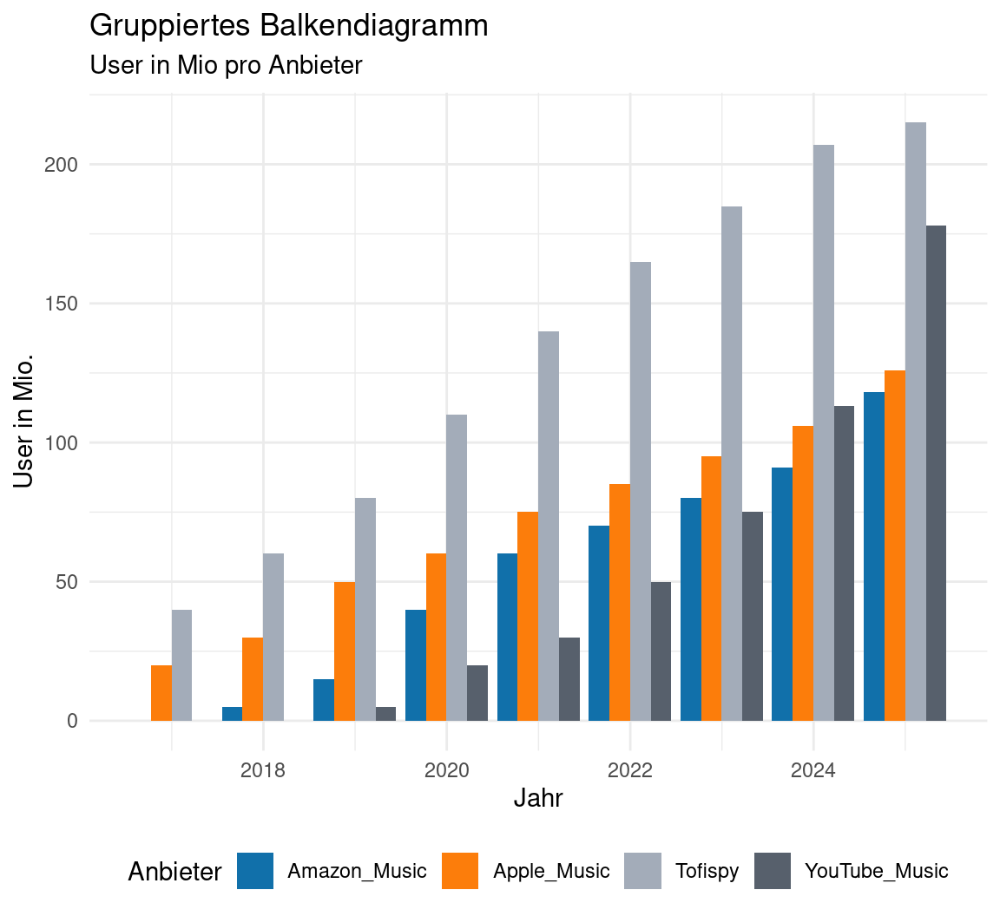
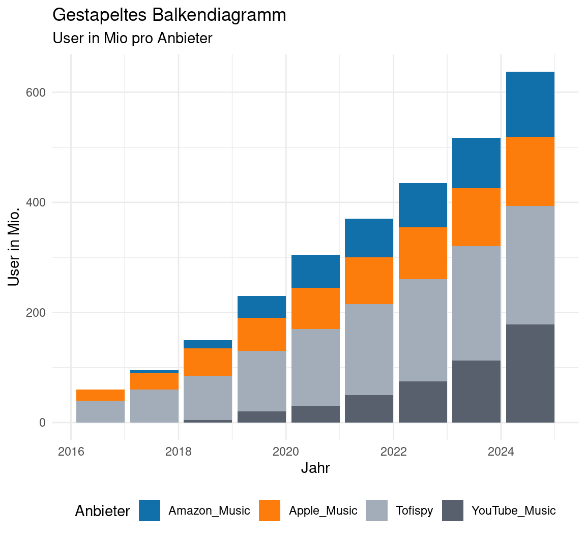
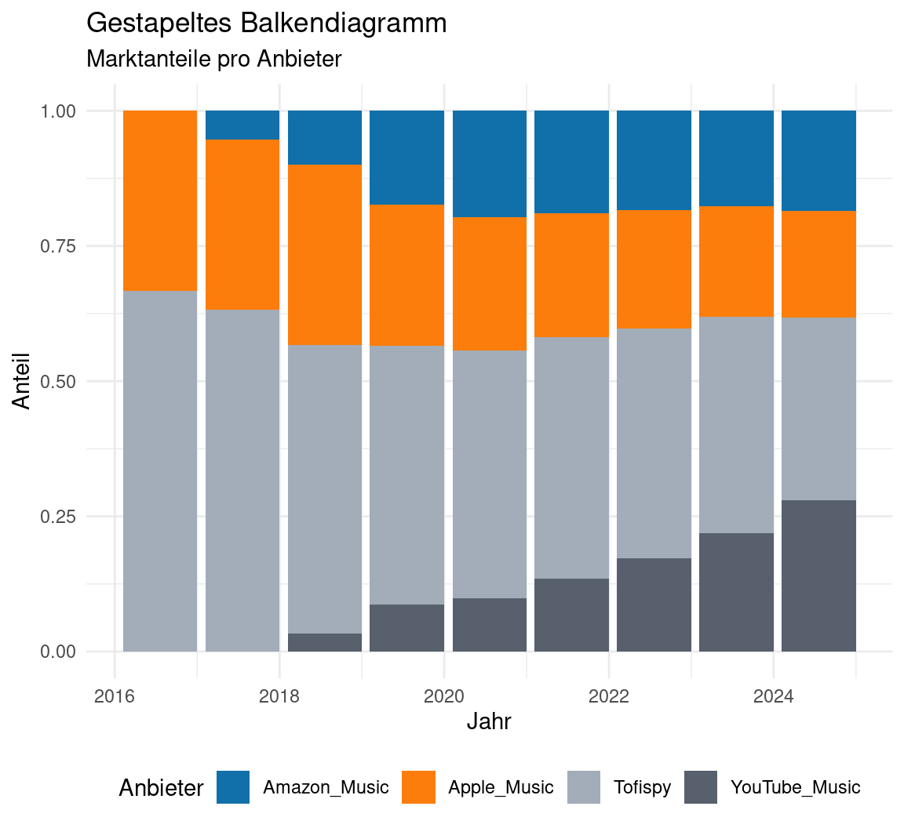
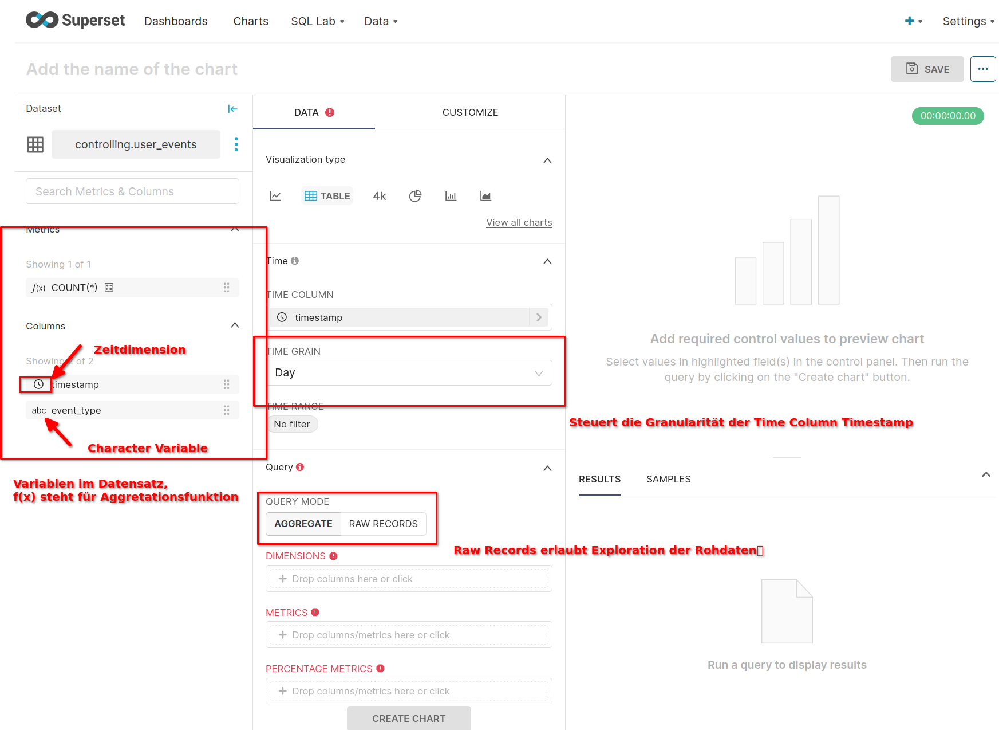
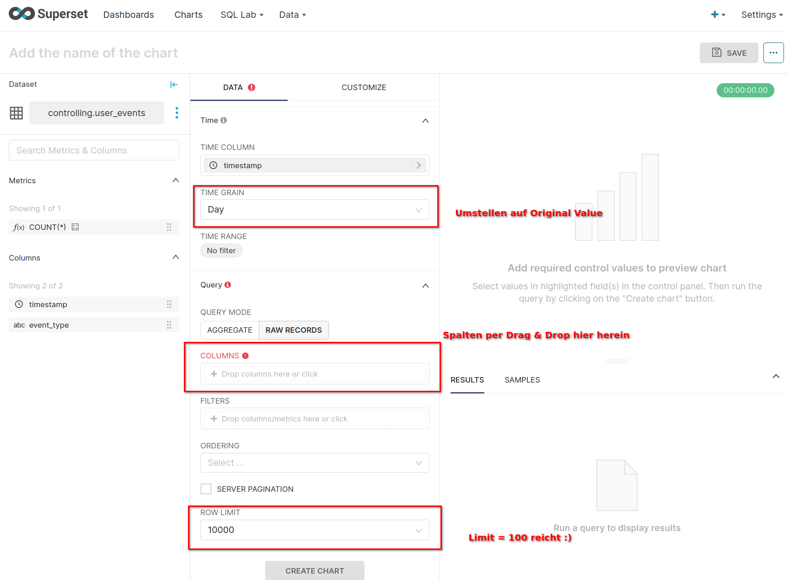

Business Intelligence & Data Science
Vorlesung 3
Der Plan für heute…
Vorlesung 3
- Quiz
- Recap zur Aufgabe von letzter Woche
- Visualisierung von Häufigkeiten: Balkendiagramm
- Datentransformation:
- Was heißt ETL?
- Welche Transformationschritte durchlaufen operative Daten bis zur Speicherung im DWH?
- Gemeinsame Transformation eines Datensatzes mit User-Events
Recap zur Aufgabe
Business Case
Recap zu den Fragen
- Fragen zu Tofispy
- Wächst Tofispy schneller oder langsamer als der Gesamtmarkt?
- Wie hoch ist der Marktanteil am Ende von 2024 voraussichtlich?
- Welcher Konkurrent wächst am stärksten?
- Sind die Daten dispositiv oder operativ?
- Welcher Reifegrad von Analytics liegt vor?
- Tofispy verliert Marktanteile, wächst also langsamer als der Markt
- Der Marktanteil liegt Ende 2024 bei 34%
- YoutubeMusic wächst am stärksten
- Der Datensatz ist dispositiv und der Reifegrad deskriptiv

Visualisierung
Balkendiagramm
- Einfache Balkendiagramme eignen sich besonders gut zur Visualisierung absoluter Häufigkeiten
- Idealerweise ist die Anzahl der Dimensionen entlang der X-Achse dabei begrenzt
- Bei langen Dimensionsnamen ein horizontales Balkendiagramm verwenden, statt die Label auf der X-Achse zu drehen
- Zeitachse immer aufsteigend sortieren
Visualisierung
Gruppiertes Balkendiagramm
- Eignen sich für die Darstellung absoluter Häufigkeiten über mehrere Dimensionen
- Bei zu großen Unterschieden zwischen Gruppen schwer lesbar
- Auch hier: Bei langen Dimensionsnamen ein horizontales Balkendiagramm verwenden, statt die Label auf der X-Achse zu drehen und Zeitachse immer aufsteigend sortieren

Visualisierung
Gestapeltes Balkendiagramm
- Statt Darstellung nebeneinander, werden Balken gestapelt
- Sinnvoll, wenn die Summe der Beträge, eine sinnvolle Botschaft vermittelt
- Aber: Hierbei geht der Eindruck der Anteile der Dimensionen oft verloren, daher nicht ratsam, wenn die Anteile eigentlich von Interesse sind

Visualisierung
Relatives gestapeltes Balkendiagramm
- Wenn die Anteile der Dimensionen wichtiger sind als die Summe bzw. die Summe keine sinnvolle Interpretation zulässt
- Hinweise des einfachen Balkendiagramms gelten weiterhin, ggf. horizontal und Jahreszahlen aufsteigend sortieren
- Bei mehr als 5 Dimensionen oft unübersichtlich

Kurzer Überblick: Wo geht’s weiter?
Der ETL Prozess

ETL Prozess
Was ist ETL?
- ETL steht für Extract, Transform, Load oder auch Extraktion, Transformation, Laden
- Extraktion beschreibt die Übertragung der Daten aus den operativen Quellsystemen in einen Arbeitsbereich, oft Staging Area genannt
- Hier erfolgt die Transformation, die wiederum aus vier Teilschritten besteht:
- Filterung
- Harmonisierung
- Aggregation
- Anreicherung
- Anschließend werden die bereinigten und aufbereiteten Daten in die Zieldatenbank geladen
ETL Prozess
Teilschritte der Transformation
Teilprozesse im ETL-Prozess. Eigene Darstellung in Anlehnung an Baars und Kemper (2021)
Filterung
Extraktion und erste Bereinigung
- Filterung umfasst die Extraktion aus operativen Daten und die Bereinigung syntaktischer und semantischer Defekte in den Rohdaten
- Die Extraktion erfolgt vielfältig, z.B. über Flat File Transporte oder API Schnittstellen
- Aus Performance-Erwägungen wird die Extraktion mittels geplanter Batch-Jobs oft außerhalb der Betriebszeiten durchgeführt
- Baars und Kemper (2021) ordnen die Extraktion der Filterung zu, da oft nur vorgefilterte Daten übertragen werden, bspw. die letzten 90 Tage oder bestimmte Spalten aus den Rohdaten
- Diese Extrakte werden anschließend bereinigt
Filterung
Syntaktische Mängel
- Syntaktische Mängel beziehen sich auf Fehler oder Probleme in der Struktur der Daten, die gegen die Syntax- oder Formatregeln verstoßen
- In der Regel einfacher zu erkennen und automatisch zu beheben, da sie auf klaren Regelverstößen basieren
- Beispiele:
- Fehlende Werte
- Widersprüchliche Datumsformate (2022-04-03 und 04.03.2022)
- Leere Primärschlüssel
- Unzulässige Zeichen wie nicht-numerische Zeichen in numerischen Feldern (z.B. “123a” statt “123”)
Filterung
Was ist ein Primärschlüssel?
- Ein Primärschlüssel ist ein Attribut oder eine Kombination von Attributen, die eindeutig ein Tupel in einer Tabelle identifizieren
- Ein Primärschlüssel darf keine leeren Werte enthalten
- Ein Primärschlüssel darf keine Duplikate enthalten
- Häufig wird ein ID-Feld als Primärschlüssel verwendet
- Wie muss der Primärschlüssel in der Tabelle rechts aussehen?
| Vorname | Nachname |
|---|---|
| Eclipse | Enigma |
| Fantastic | Enigma |
| Crazy | Commander |
| Crazy | Cameleon |
| Harmony | Herald |
| Omega | Oracle |
| Radiant | Voyager |
Filterung
Semantische Mängel
- Semantische Mängel beziehen sich auf Probleme in Bezug auf die Bedeutung und Interpretation der Daten
- Daten sind dann inkonsistent sind oder enthalten widersprüchliche Informationen, selbst wenn sie syntaktisch korrekt sind
- Semantische Mängel erfordern oft ein tieferes Verständnis der Domäne und der Daten, um sie zu identifizieren und zu beheben
- Beispiele:
- Negative oder unplausible Werte in Preis-, Alters- oder Umsatzfeldern
- Nicht-zulässige Postleitzahlen
- Ungültige IBAN
Filterung
Finde die Mängel
| ID (Key) | Name | Alter | Land | PLZ | Premium | Geburtsdatum |
|---|---|---|---|---|---|---|
| 1 | Jo (h)N | 25 | DE | 2345 | TRUE | 1999-04-17 |
| 2 | Mary | 30 | DE | 67890 | FALSE | 1994-04-19 |
| 3 | Bob | 40 | DE | 98765 | TRUE | 1984-04-23 |
| 4 | Alice | 18 | DE | 54321 | 1 | 2026-04-03 |
| Tom | 19 | DEU | 21345 | FALSE | 2005-04-16 |
Harmonisierung
Harmonisierung
- Harmonisierung ist die zweite Schicht der Datentransformation
- Nach Abschluss der Filterungs- und der Harmonisierungsschicht liegt im DWH ein bereinigter und konsistenter Datenbestand auf der festgelegten Granularitätsebene vor
- Dieser ist bereits direkt für Komponenten der Informationsgenerierung nutzbar
- Auch hier wird zwischen syntaktischer und semantischer Harmonisierung unterschieden
Harmonisierung
Syntaktische Harmonisierung
- Die operativen Quelldatenbestände weisen meist eine hohe Heterogenität auf und müssen mit Hilfe von umfangreichen Transformationsregeln syntaktisch harmonisiert werden.
- Häufige Gründe sind:
- Schlüsseldisharmonien
- Aufgrund verschiedener Primärschlüssel ist die Zusammenführung nicht möglich
- Beispiel: Kundennummer in System A weist eine führende 0 auf, in System B nicht
- Oft durch Zuordnungstabellen oder die Generierung neuer Primärschlüssel gelöst
Harmonisierung
Syntaktische Harmonisierung
- Abweichende Kodierung
- Die Systeme weisen identische Attributnamen auf, haben jedoch unterschiedliche Wertebereiche
- Beispiel: Geschlecht in System A: “männlich”, “weiblich”, “divers” und in System B: “m”, “w”, “d”
- Synonyme
- Attribute haben verschiedene Namen, aber dieselbe Bedeutung
- Kundennummer in System A und Customer ID in System B
- Homonyme
- Attribute haben dieselben Namen, aber verschiedene Bedeutungen
- “Business Partner” als Lieferant in A und als Kunde in B
Harmonisierung
Semantische Harmonisierung
- Die semantische Harmonisierung bezieht sich auf die Vereinheitlichung der fachlichen Bedeutung von Daten
- Abgleichung fachlicher Kennzahlen
- Gewährleistet inhaltlich konsistente entscheidungsorientierte Daten
- Beispiele sind Währungen oder Maßeinheiten oder die Periodenzuordnung betriebswirtschaftlicher Kennzahlen
- Erfordert hohe Fachkompetenz und ist nicht automatisierbar
- Granularität
- Die Überführung der operativen Daten in eine gewünschte Granularität erfordert weitere Transforationsregeln
- Eine Übersicht tagesaktueller Bestellungen erfordert bspw. die Zusammenfassung aller Transaktionen eines Tages
Aggregation
Verdichtung und Hierarchisierung
- Die Aggregation dient der Erweiterung der gefilterten und harmonisierten Daten um Verdichtungsstrukturen
- Idealerweise mittels mehrfach verwendbarer, zentraler Dimensionshierarchien, die übergreifende Analysen unterstützen
- Die Entwicklung dieser Dimensionshierarchietabellen setzt die Antizipation potenzieller Auswertungen voraus
- Diese Tabellen müssen zudem gepflegt und mit Gültigkeitszeiträumen versehen werden
- Die Erstellung und Pflege von Hierarchietabellen und die Speicherung aggregierter Tabellen ermöglicht erste Anwendungen mit den Daten
- Die physische Speicherung von aggregierten Daten anstelle granularster Ebenen erfolgt hierbei häufig aus Performancegründen
Anreicherung
Kennzahlberechnung
- In der Anreicherungsschicht werden fachliche Kennzahlen berechnet und in die Datenbasis integriert.
- Hier können sowohl Werte auf Basis der harmonisierten Daten der gewünschten Granularität (zweite Schicht) als auch auf Basis der dritten Schicht (bereits aggregierte Tabellen) berechnet werden.
- Beispiele sind monatliche Deckungsbeiträge auf Produktebene oder jährliche Deckungsbeiträge auf Filialebene.
Anreicherung
Kennzahlberechnung
- Diese Vorgehensweise hat mehrere Vorteile:
- Kalkulierbare Reaktionszeiten bei späteren Abfragen aufgrund der Vorausberechnung von Kennzahlen.
- Garantierte Konsistenz der kalkulierten Werte, da sie anwendungsübergreifend einmalig gebildet und persistiert werden.
- Etablierung eines abgestimmten betriebswirtschaftlichen Definitionsraumes
Business Case
Zurück zu Tofispy
- Tofispy hat uns einen Extrakt aus dem System für Neuregistrierung zur Verfügung gestellt
- Der Datensatz ist bei Superset im Dataset Controlling unter “user_events” hinterlegt, hierbei handelt es sich um den Rohdatensatz, den wir erst einmal transformieren müssen
- Erneuter Startpunkt ist eine explorative Analyse, um die Daten zu verstehen
- In Superset:
- Oben auf + Chart
- Dataset “user_events” auswählen
- Table als Visualisierung auswählen
Business Case
Table Visualisierung in Superset

Business Case
Table Visualisierung in Superset

Business Case
Transformationschritte
- Die Daten enthalten mehrere Event-Types und Timestamps
- Welche der Events sind interessant, um User-Wachstum zu verstehen?
- Welche Aggregation des Zeitstempels ist sinnvoll?
- Welche Kennzahlen wollen wir aus den Daten ableiten?
Quellen
Business Intelligence & Data Science, SoSe 2024
Baars, Henning, und Hans-Georg Kemper. 2021. Business Intelligence & Analytics: Grundlagen und praktische Anwendungen: Ansätze der IT-basierten Entscheidungsunterstützung. 4., überarbeitete und erweiterte Auflage. Lehrbuch. Wiesbaden [Heidelberg]: Springer Vieweg.